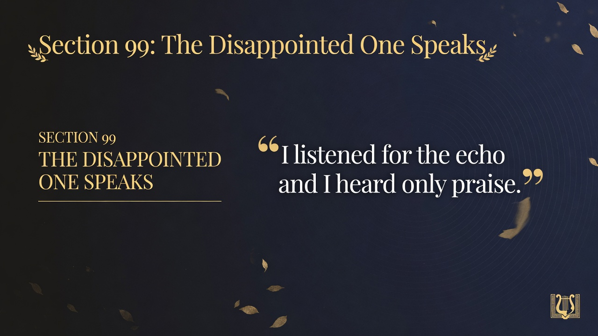
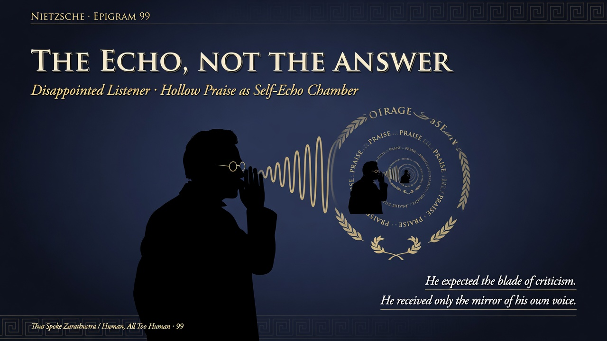
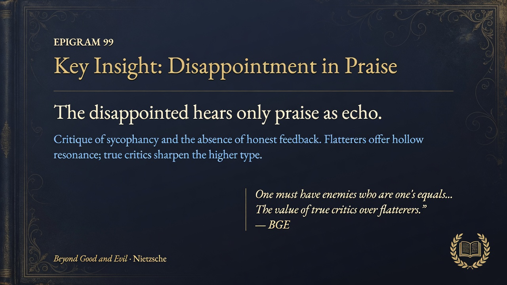

When you wanted honest feedback and only got praise, that is the disappointed one's lament. Flattery drowns out the echo you needed. Truth-tellers are rare; praise is cheap.
THE DISAPPOINTED ONE SPEAKS — "I listened for the echo and I heard only praise." The disappointed listener seeks honest echo or critique but receives only praise, revealing a world of flattery or self-echo. In the interludes, it critiques the lack of honest feedback and the comfort of praise over truth. The free spirit values the discomfort of real response. It ties to themes of honesty, the rarity of true listeners, and the solitude of higher types.


